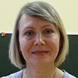

Дошкольное отделение школы № 556
В 2015 году 74% первоклассников Школы № 556 пришли из дошкольного отделения.
- Днепропетровская улица, 16Б
- Днепропетровская улица, 23А
- Чертановская улица, 26А
Воспитатели
Воспитатели, которых чаще всего благодарят родители (отзывы и профили сотрудников взяты с официального сайта школы):|
Воспитатель
Андреева Надежда Федоровна
4 благодарности |
Воспитатель
Андреенкова Валентина Михайловна
4 благодарности |
Воспитатель
Крюкова Светлана Алексеевна
3 благодарности |
Воспитатель
Тюрина Елизавета Алексеевна
3 благодарности |
|
Воспитатель
Лебедева Татьяна Александровна
3 благодарности |
Воспитатель
Сергеева Анастасия Викторовна
3 благодарности |
Воспитатель
Попова Екатерина Александровна
3 благодарности |
Воспитатель
Осипова Татьяна Викторовна
3 благодарности |
|
Воспитатель
Сложеникина Татьяна Ивановна
3 благодарности |
Муз. рук.
Авдеева Татьяна Геннадиевна
2 благодарности |
Воспитатель
Игнатьева Светлана Вячеславовна
1 благодарность |
Воспитатель
Павликова Галина Павловна
1 благодарность |
 Физ. рук.
Ильина Елена Витальевна
Физ. рук.
Ильина Елена Витальевна
1 благодарность |
Воспитатель
Павликова Нина Валентиновна
1 благодарность |

Воспитатель
Еремина Любовь Ивановна
1 благодарность |
Воспитатель
Урмацких Ольга Ивановна
1 благодарность |
Отзывы
Данные собраны c официального сайта школы и через форму для отзывов.
Родители детей, воспитываемых в группе № 7 ДО№1, выражают свою благодарность воспитателям Ереминой Любови Ивановне, Игнатьевой Светлане Вячеславовне, Кузнецовой Марине Михайловне за их отличную работу, доброе отношение к детям и отзывчивость к родителям. В группе всегда добрая, дружественная атмосфера, воспитатели внимательно относятся к каждому ребенку и готовы дать советы по воспитанию, уходу, обучению ребенка. В группе постоянно проводятся творческие занятия с детьми, результатами которых мы любуемся ежедневно на выставочном стенде. Дети познают окружающий мир, о чем постоянно рассказывают дома, проводятся практические занятия – вырастили собственный огород. За учебный год наши дети научились очень многому: знают алфавит, выучили цифры, счет, освоили навыки логического мышления – все это родители наблюдали на открытом уроке. Также хотим выразить благодарность Пушик Оксане Юрьевне и Пиматовой Светлане Николаевне за организацию творческих и познавательных мероприятий: проводятся олимпиады, соревнования, праздники, конкурсы, театральные представления, выставки совместных работ детей и родителей.
Мы очень благодарны Тюриной Елизавете Алексеевне за очень активное участие в жизни наших деток в садике.
Она очень много делает для деток - постоянно организовывает праздники, театры, предлагает родителям заниматься вместе с детками, задавая им творчество на дом.
Когда я спрашиваю дочку "кого хочешь позвать в гости", она говорит "Елизавету Алексеевну".
Она очень много делает для деток - постоянно организовывает праздники, театры, предлагает родителям заниматься вместе с детками, задавая им творчество на дом.
Когда я спрашиваю дочку "кого хочешь позвать в гости", она говорит "Елизавету Алексеевну".
Наш ребенок ходит в 7 группу. Воспитатели очень не нравятся. На праздниках видно, как другие воспитатели относятся к другим деткам. Наши воспитатели очень тягостно относятся к детям. такое впечатление, что их заставляют работать через одолжение. Наше ребенку даже не интересно ходить в садик. Говорит, что не хочет, не интересно и вообще его в садике Татьяна Викторовна ругает. Почему-то, когда мы ходили в садик в своем детстве, был интерес и желание. А по нашим детям нет его. Видимо там не заинтересовали. Собираемся менять садик.
16 апреля в очередной раз имели удовольствие посетить Фестиваль искусств. Очень приятно, что наши маленькие детки принимают участие в общешкольном мероприятии. Бесспорно, мы очень благодарны замечательным женщинам, мамочкам 2 группы ДО 3, которые пестуют наших детей - Зарима Магомедовна, Светлана Алексеевна, Елена Викторовна. Иногда по утрам взрослым так хочется остаться в группе на целый день. Всегда называют вторым домом школу, для нас это детский сад. Долгие годы Валентина Германовна Кирикова создавала и берегла это чудесное место, надеюсь, ее наследие будет процветать и дальше.
В качестве пожелания скажу, что хотелось бы чаще выходить на различные мероприятия образовательной организации за пределы детского сада. Пройдет пара лет, наши дети придут первоклашками. К ним надо присматриваться уже сейчас.
В качестве пожелания скажу, что хотелось бы чаще выходить на различные мероприятия образовательной организации за пределы детского сада. Пройдет пара лет, наши дети придут первоклашками. К ним надо присматриваться уже сейчас.
"Благодарность коллективу Д/О № 1 ГБОУ № 556!"
От имени нашей семьи-семьи Порошковых выражаем Благодарность Д/О № 1 ГБОУ № 556 в лице Старшего воспитателя Пушик Оксаны Юрьевны за ВНИМАТЕЛЬНОЕ И ПРОФЕССИОНАЛЬНОЕ ОТНОШЕНИЕ к детям.
В этом году мы скажем: "До свиданья, Детский Сад!" и хочется сказать много добрых слов и слов благодарности ВСЕМУ КОЛЛЕКТИВУ д/о № 1 и с ОСОБЫМ ТЕПЛОМ:
- Воспитателям группы № 5:
Крюковой Светлане Алексеевне
Хорошко Наталье Анатольевне
Золотовой Елене Евгеньевне
- Воспитателям группы № 1:
Лавецкой Анне Васильевне
Васиной Валентине Анатольевне
Рахимовой Марине Филлиповне
- Воспитателям группы № 2:
Лебедевой Валентине Петровне
Манишиной Елене Сергеевне
Деминой Елене Викторовне
- Педагогам Дополнительного образования.
Спасибо огромное за понимание, терпение, за ту любовь, которую вы отдаете нашим детям!
А также хотим отдельно поблагодарить от всей души и с низким поклоном Самого Яркого Представителя д/о № 1, Человека-Идею-педагога по Физической культуре- Андрееву Надежду Федоровну! За вклад в воспитание и спортивные достижения наших детей.
В этом педагоге мы встретили крайне редко встречающееся в нашем современном мире сочетание качеств: любовь к своей работе (этого качества, к сожалению сейчас катастрофически многим не хватает), любовь к детям, стремление к творчеству. За столь короткое время Надежда Федоровна раскрыла в детях лучшие качества: доброту, уважение ко всему окружающему, дисциплину.
Хотим пожелать Надежде Федоровне дальнейшего профессионального и творческого роста, оптимизма, благополучия, здоровья и успехов в нелегком труде.И быть примером для многих тех, которым мы-родители доверяем САМОЕ ДОРОГОЕ ЧТО У НАС ЕСТЬ-НАШИХ ДЕТЕЙ!!!
Вложенный файл
От имени нашей семьи-семьи Порошковых выражаем Благодарность Д/О № 1 ГБОУ № 556 в лице Старшего воспитателя Пушик Оксаны Юрьевны за ВНИМАТЕЛЬНОЕ И ПРОФЕССИОНАЛЬНОЕ ОТНОШЕНИЕ к детям.
В этом году мы скажем: "До свиданья, Детский Сад!" и хочется сказать много добрых слов и слов благодарности ВСЕМУ КОЛЛЕКТИВУ д/о № 1 и с ОСОБЫМ ТЕПЛОМ:
- Воспитателям группы № 5:
Крюковой Светлане Алексеевне
Хорошко Наталье Анатольевне
Золотовой Елене Евгеньевне
- Воспитателям группы № 1:
Лавецкой Анне Васильевне
Васиной Валентине Анатольевне
Рахимовой Марине Филлиповне
- Воспитателям группы № 2:
Лебедевой Валентине Петровне
Манишиной Елене Сергеевне
Деминой Елене Викторовне
- Педагогам Дополнительного образования.
Спасибо огромное за понимание, терпение, за ту любовь, которую вы отдаете нашим детям!
А также хотим отдельно поблагодарить от всей души и с низким поклоном Самого Яркого Представителя д/о № 1, Человека-Идею-педагога по Физической культуре- Андрееву Надежду Федоровну! За вклад в воспитание и спортивные достижения наших детей.
В этом педагоге мы встретили крайне редко встречающееся в нашем современном мире сочетание качеств: любовь к своей работе (этого качества, к сожалению сейчас катастрофически многим не хватает), любовь к детям, стремление к творчеству. За столь короткое время Надежда Федоровна раскрыла в детях лучшие качества: доброту, уважение ко всему окружающему, дисциплину.
Хотим пожелать Надежде Федоровне дальнейшего профессионального и творческого роста, оптимизма, благополучия, здоровья и успехов в нелегком труде.И быть примером для многих тех, которым мы-родители доверяем САМОЕ ДОРОГОЕ ЧТО У НАС ЕСТЬ-НАШИХ ДЕТЕЙ!!!
Вложенный файл
Хотим выразить огромную благодарность коллективу дошкольного отделения 1 и нашим дорогим воспитателям: Екатерине Александровне,Валентине Николаевне,Валентине Михайловне и Татьяне Ивановне. Спасибо Вам большое за увлекательное путешествие в страну детства (фестиваль 02.04.2016 г.). Спасибо вам за то, что наши дети, всегда улыбчивые и позитивные, с каждым новым днем узнают все новое и интересное и делятся с нами своими успехами. Наши дети стали самостоятельнее, активнее, грамотнее и увереннее в себе! От всей души благодарим вас за терпеливое и трепетное отношение к нашим детям, добрые сердца и за то, что Вы не просто выполняете свои должностные обязанности, а вкладываете в работу свою душу. Видя,как наши дети Вас любят,мы не переживая, спокойно доверяем их Вам, зная, что позаботитесь о них с чистым сердцем! С уважением,родители 4 группы,ДО1.
Здравствуйте! Хочется выразить большую благодарность руководству д/о №1 за организацию дней открытых дверей.
После посещений открытых занятий в группе №9 по математике и ознакомлению с окружающим миром под руководством Павликовой Нины Валентиновны и Урмацких Ольги Ивановны остались только положительные эмоции.
Их профессионализм, доброжелательное отношение к детям, терпение, проведение интересных и увлекательных занятий, творческий подход не оставляет равнодушными. Спасибо Вам за заботу о детях, огромный вклад в их воспитание и всестороннее развитие.
Отдельного восхищения и внимания заслуживает организация и проведение утренников и праздников. Это всегда долгожданно, интересно,весело и необычно.
Спектакль, посвященный русской истории и народным промыслам, принёс массу удовольствия детям-артистам и родителям-зрителям. Красивые костюмы, интересный сценарий, дети хорошо знающие свои роли - это 100% заслуга воспитателей.
Также, огромное спасибо помощнику воспитателей Сушко Наталье Александровне за чистоту и порядок в группе, за заботу о детях.
Отдельно хочется поблагодарить тренера Ильину Елену Витальевну за занятия с детьми в бассейне. Нам очень повезло, что в саду есть бассейн с таким тренером.
Спасибо Авдеевой Татьяне Геннадиевне, руководителю дополнительного кружка "Ласточка", за веселые, грамотные и эффективные занятия с детьми. Дочка идёт на её занятия с большим удовольствием. Знание своего дела, индивидуальный подход и любовь к детям, вот что приходит на ум, когда говоришь о Татьяне Геннадиевне.
В общем, радостно осознавать, что у ребёнка насыщенная детская жизнь благодаря высококвалифицированным педагогам, воспитателям и руководителям ГБОУ СОШ 556 д/о №1.
После посещений открытых занятий в группе №9 по математике и ознакомлению с окружающим миром под руководством Павликовой Нины Валентиновны и Урмацких Ольги Ивановны остались только положительные эмоции.
Их профессионализм, доброжелательное отношение к детям, терпение, проведение интересных и увлекательных занятий, творческий подход не оставляет равнодушными. Спасибо Вам за заботу о детях, огромный вклад в их воспитание и всестороннее развитие.
Отдельного восхищения и внимания заслуживает организация и проведение утренников и праздников. Это всегда долгожданно, интересно,весело и необычно.
Спектакль, посвященный русской истории и народным промыслам, принёс массу удовольствия детям-артистам и родителям-зрителям. Красивые костюмы, интересный сценарий, дети хорошо знающие свои роли - это 100% заслуга воспитателей.
Также, огромное спасибо помощнику воспитателей Сушко Наталье Александровне за чистоту и порядок в группе, за заботу о детях.
Отдельно хочется поблагодарить тренера Ильину Елену Витальевну за занятия с детьми в бассейне. Нам очень повезло, что в саду есть бассейн с таким тренером.
Спасибо Авдеевой Татьяне Геннадиевне, руководителю дополнительного кружка "Ласточка", за веселые, грамотные и эффективные занятия с детьми. Дочка идёт на её занятия с большим удовольствием. Знание своего дела, индивидуальный подход и любовь к детям, вот что приходит на ум, когда говоришь о Татьяне Геннадиевне.
В общем, радостно осознавать, что у ребёнка насыщенная детская жизнь благодаря высококвалифицированным педагогам, воспитателям и руководителям ГБОУ СОШ 556 д/о №1.
Уважаемые Анастасия Викторовна,Татьяна Александровна и Людмила Григорьевна!
Искренне благодарим Вас за внимательное и чуткое отношение к детям. Спасибо за проявленные заботу, терпение и доброту. Выражаем искреннюю признательность за индивидуальный подход к каждому ребенку, за создание теплой и дружелюбной атмосферы в группе.
Желаем профессиональных успехов, здоровья и терпения!
С уважением,
Родители группы №9 детского сада №556 ДО №2
Искренне благодарим Вас за внимательное и чуткое отношение к детям. Спасибо за проявленные заботу, терпение и доброту. Выражаем искреннюю признательность за индивидуальный подход к каждому ребенку, за создание теплой и дружелюбной атмосферы в группе.
Желаем профессиональных успехов, здоровья и терпения!
С уважением,
Родители группы №9 детского сада №556 ДО №2
От всего сердца хочу поблагодарить воспитателей ГКП ДОN1 Павликову Галину Павловну и Исаеву Татьяну Петровну за профессионализм, доброту и чуткое отношение к нашим детям. Спасибо вам за то, что стараетесь найти подход к каждому ребенку!
Если вы нашли ошибку или неточность, пожалуйста, сообщите нам об этом.
Ученик, выпускник или родитель? Оставьте отзыв о детском саде.